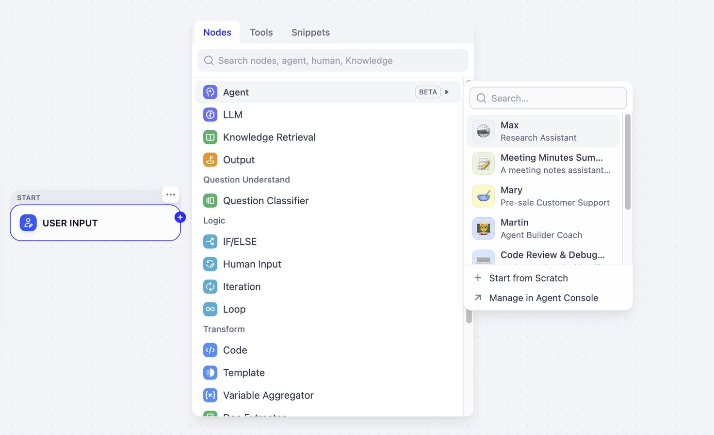

New Agent のご紹介
原文: Introducing New Agent（Dify 公式ブログ）

本日、New Agent を発表します。
Dify の Agent は、独立したアプリとして、あるいはワークフローで再利用できるリソースとして使えるようになりました。各 Agent は独自の設定とライフサイクルを持ちます。一度構築し、継続的に改善し、Web アプリとして公開する、API として公開する、複数のワークフローで再利用する——いずれも可能です。
AI エージェントは、概念実証（PoC）から実際のビジネス利用へと急速に移行しています。McKinsey の 2025 State of AI 調査によると、回答者の 62% が自社で AI エージェントを少なくとも実験していると答えています。導入が進むにつれ、新たな問いが生まれます。誰が Agent を保守するのか。どこで使われているのか。チームはどう安全に更新し、実行が失敗したときに何が起きたかを把握できるのか。
これらの問いが、Dify における Agent のあり方を再考するきっかけになりました。そして New Agent 体験が、その答えです。
Agent ノードから New Agent へ
2025年3月、Dify は Agent ノードと Agent Strategies を導入し、モデルがワークフロー内で自律的に推論し、ツールを使えるようにしました。
しかし、各 Agent は構築したワークフローに紐づいたままでした。同じ能力を別の場所で使うには、プロンプト、ツール、その他の設定を一から作り直す必要がありました。
New Agent は、これを変えます。
各 Agent は、モデル、プロンプト、スキル、ファイル、ツール設定の唯一の情報源（Single Source of Truth）を持つようになりました。一箇所で保守し、数クリックで異なるアプリやワークフローに再利用できます。

一箇所で Agent を構築・管理・追跡する
再利用可能な Agent に必要なのは、設定画面だけではありません。チームには、実際の業務を通じて磨き、異なる文脈で適用し、本番での振る舞いから学んで改善する手段が必要です。
New Agent 体験は、次の3つを軸に設計されています。
- Build（構築）: 柔軟な設定モードで、実際の業務を、ビジネスワークフロー全体で再利用できる Agent の能力に変える。
- Manage（管理）: 1つの Agent を複数のワークフローで再利用し、重複と保守コストを減らす。
- Track（追跡）: 単一実行のトレーシングと長期モニタリングにより、完全なホワイトボックスの可観測性を得る。
Build: 実際の業務を通じて Agent を磨く
優れた Agent は、実際にこなす仕事によって形作られます。
目標は明確でも、どのツールが必要か、境界はどこにあるべきか、どの手法を残すべきかは、使いながら見えてくるものです。
Dify では、次の2つの始め方ができます。
| アプローチ | 向いているケース | 仕組み |
|---|---|---|
| Configure | 目標が明確で、進め方が定まっている | 手動で設定: モデルを選び、プロンプトを書き、スキル、ファイル、ツールを追加する。 |
| Build mode | 目標は明確だが、進め方は変わりうる | AI と一緒に構築: 目標を説明すると、Agent がセットアップを案内し、変更をレビュー用にステージする。 |

Build モードでは、変更は Build Draft に保存され、設定パネルに反映されます。設定パネルで何が変わったかを確認し、残したい変更は keep、不要なものは discard できます。
Agent は build_note.md も維持します。設定変更を追跡し、何を設定したか、まだ何に注意が必要かを記録し続けるドキュメントです。いつでも Preview で、ユーザーと同じように Agent を試せます。問題なければ、更新を公開してください。
Agent はプロンプト以上のものです
簡単なタスクなら、プロンプトだけで足りることもあります。しかし、ビジネスルール、参照資料、ツールの使い方、詳細な運用手順までプロンプトに詰め込むと、保守は難しくなります。
これを支えるため、Dify は New Agent の中で、各能力を明確で管理しやすい部品として切り出します。

各部品は個別に保守できます。プロンプト全体を書き直さなくても、ツールを差し替えたり、スキルを磨いたりできます。
Agent を拡張する3つの方法
Dify は、すばやい探索からガバナンスされた本番利用まで、Agent の能力を広げる3つの方法を提供します。
| Tool | Skill | サンドボックス内の CLI ツール | |
|---|---|---|---|
| 主な用途 | 管理された外部能力をつなぐ | チームの手法と実践を残す | 一時的な作業を扱う |
| 能力の種類 | プラグイン、API、MCP、Workflow as Tool | ガイド、参照資料、実行スクリプト | 現在のセッション内のターミナルコマンド |
| 向いているケース | 本番での集中的なガバナンス | 社内手法の一貫した再利用 | すばやい探索と単発タスク |
管理された連携のための Tools
本番品質の連携で New Agent を強化できます。チームは Marketplace の拡張機能を組み込み、カスタム API や MCP サーバーを接続し、既存のワークフローを Tool としてラップできます。

Tools はワークスペース単位で管理され、複数の Agent で共有されます。たとえばチャート作成ツールは、一度セットアップすれば十分です。異なる Agent が、データ分析、週次レポート作成、社内ダッシュボード用チャート作成に同じツールを使えます。
追加の設定が必要な能力には、Advanced Settings が環境変数を一箇所にまとめ、サンドボックス内の Agent から使えるようにします。エンドポイント、デフォルト値、ランタイム設定が変わっても、出現箇所を一つずつ探す必要はありません。
繰り返し使える手法のための Skills
Skill は、一緒に扱うべき指示、参照資料、スクリプトをパッケージ化します。

たとえばグロース分析のスキルには、CTR、CPA、ROAS の定義と、それらを一貫して計算するスクリプトを含められます。Agent はプロンプトを肥大化させたり、別の Tool を作ったりせずに、同じ手法を複数のタスクで再利用できます。

Skills には、さらに続きます。現在取り組んでいる Skill Management では、Skills をワークスペース全体の共有リソースにします。チームは一箇所で Skills を管理・バージョン管理し、異なる Agent で再利用できるようになります。
プロセスが進化すれば、その背後にある Skills も進化できます。同じ手法に依存する Agent 同士の足並みを揃え続けられます。
一時作業のための CLI ツール
一度だけ必要なツールもあります。Agent の恒久的な構成に追加する代わりに、現在のサンドボックスセッションで CLI ツールをインストールして実行できます。
たとえば編集可能なグロース用デッキを依頼すると、Agent はサンドボックスに必要なものをインストールしてファイルを作成します。ログのパース、ファイル変換、データセットの処理といった単発作業でも同じです。

同じ CLI セットアップが何度も出てくるようになったら、Skill にしましょう。その能力を複数の Agent で安定して使う必要があるなら、API、MCP サーバー、プラグイン、Workflow Tool として、共有の Dify 能力にします。
毎回の修正を、次の実行の改善にする
Agent を公開することは、構築の終わりではありません。実際の仕事が始まると、新しい実行がギャップを明らかにします。曖昧な指示、足りないコンテキスト、磨きが必要な手法です。
本当に役立つ問いは、単にこうではありません。
「この回答をどう直すか？」
こうです。
「その修正は、どこに置くべきか？」
商品比較 Agent を例にします。テスト中、2つの異なる商品の栄養成分が混ざってしまいました。プロンプトに指示を足せば、その回答は直ったかもしれません。しかし根本原因には届きません。
代わりに、各商品の情報を別々のレコードに分け、Skill を更新して、商品を個別に取得し、利用可能な根拠を検証し、存在しない情報を推測しないようにしました。

次のテストでは、Agent は2つの商品を分けたまま、アレルゲン、在庫、返金、プライバシーに関する質問を、正しい境界で扱いました。
1つの回答をその場しのぎで直すのではなく、Agent がタスクを扱う仕方そのものを改善しました。その改善は、その後のすべての実行に引き継がれます。
Manage: 一度構築し、どこでも再利用する
Agent をコピーするのは簡単です。すべてのコピーを最新に保つには、同じ変更を何度も繰り返すことになります。
同じプロンプト、スキル、ツール、設定が複数のアプリに散らばると、更新のたびにやり直しです。やがてチームは、どれが最新のコピーなのか分からなくなります。
New Agent 体験は、それらのコピーを、1つの共有 Agent に置き換えます。Agent ページは、ステータス、作成者、更新日時で Agent を探し、管理する中心の場所です。各 Agent には、名前、説明、設定、公開状態があります。

1つの Agent、複数のアクセスポイント
Agent は Web アプリとして公開したり、API として公開したり、複数のワークフローで再利用したりできます。同じ Agent が、設定を複製せずに異なる文脈で働けます。

Access Points は、その Agent がどこで利用可能か、どのワークフローが使っているかを示します。共有設定の変更を公開する前に、メンテナーは影響範囲を把握できます。

ワークフロー内でタスクを定義する
同じ Agent が、ワークフローごとに異なる役割を担います。

ワークフローを組む人は、Agent のプロンプト、スキル、ツールを再設定する必要はありません。代わりに Agent Task で、現在のノードで Agent が何をすべきか、どの上流変数を使えるか、どんな結果を出すべきかを定義します。宣言的な出力（declarative outputs） により、その結果をあらかじめ決めた構造で下流ノードに渡せます。

例を見てみましょう。グロースに関する質問に答え、指標を計算し、チャートを作れる Growth Analytics Agent を作ったとします。単独でも使えますし、同じ Agent を Campaign Analysis ワークフローに組み込み、より焦点を絞ったタスクを与えることもできます。そこからワークフローが、品質チェック、分岐、人によるレビューを担当します。

単一ワークフローに閉じた一時的な能力なら、空の Agent ノードから始めてください。後で他の文脈でも役立つと分かったら、Agents に保存して中央で管理できます。
一度構築し、必要な場所に同じ能力を適用します。共有能力は一貫したまま、タスクの境界は明確に保てます。
Track: 何が起きたかを見る
Agent が複数のアクセスポイントとワークフローで使われるようになると、最終回答だけでは問題の所在を特定できません。チームが知る必要があるのは、どの Agent が関与したか、いつどこで実行されたか、どのアクセスポイントまたはワークフローがトリガーしたかです。
Dify は、個別の実行から長期パフォーマンスまで、3つのレベルの可観測性を提供します。
単一実行: Logs と Tracing
ログとトレーシングは、ユーザー入力から最終応答まで、各実行で何が起きたかを示します。各実行にはアクセスポイントが含まれるため、問題が特定のソース由来なのか、共有 Agent 設定由来なのかを判断しやすくなります。

ワークフローノード: Agent ワークフローを精密にデバッグする
Agent がワークフロー内で動くとき、Last Run と Variable Inspect で実行ステップとノード間で渡されたデータを検査でき、問題が Agent 側か周囲のワークフロー側かを切り分けやすくなります。

システムトレンド: 運用モニタリング
チームは、利用量、品質、パフォーマンス、コストを時系列で追跡し、バージョンや文脈をまたいで結果を比較できます。

Dify は Workflow log archives も導入します。過去の実行を月ごとに整理し、長期調査、運用分析、内部監査のためにダウンロードできます。

ログアーカイブは Community Edition では利用できません。保持期間とアーカイブの詳細は → ドキュメント
Dify の中核の上に築く
New Agent 体験は、Dify が常に中核としてきた4つのことを拡張します。
- モデル非依存 — 商用モデルでもセルフホストモデルでも、ベンダーロックインなし。パフォーマンス、コスト、コンプライアンスのバランスを取れます。
- ビジュアルな構築 — 実際のタスクから始める。Build モードで磨く。自然言語での探索と、ビジネスと技術のチームが一緒にレビューできる透明で構造化された設定を組み合わせます。
- 柔軟な組み合わせ — Agent をスタンドアロンで使う、API でつなぐ、データ処理・ビジネスルール・人による承認と並んでワークフローに埋め込む。1つの能力、多くの文脈。
- 透明なコントロール — ログ、トレーシング、モニタリング、バージョン管理、認証情報の分離、Human Input により、見えるガバナンスされた境界の中で Agent を運用します。Agent は、見える境界の中にとどまります。
エンタープライズにとって難しいのは、たいてい1つの Agent を作ることではありません。その Agent を組織全体で安全に再利用し、長期にわたって保守し、明確な可観測性とガバナンスのもとで本番運用できるようにすることです。Dify はモデル、Agent、ワークフロー、API、ランタイムの可視性を1つのプラットフォームにまとめ、チームが共有能力を一貫したやり方で構築・デプロイ・改善できるようにします。
構築を始める
New Agent は動的な判断を提供し、ワークフローはプロセスの構造とコントロールを提供します。両者を組み合わせることで、企業はローンチ前にあらゆる状況を先回りして想定するのではなく、実際のユースケースから始め、ビジネスの進化に合わせて改善し続けられます。
まずは1つの実際の業務から始めてください。実際の実行を通じて Agent を磨き、実証された能力を組織のより広い範囲で再利用しましょう。Agent の設定方法は ドキュメント をご覧ください。
本ページは https://dify.ai/blog/introducing-new-dify-agent の日本語訳です。図は原文のアセットをそのまま埋め込んでいます。